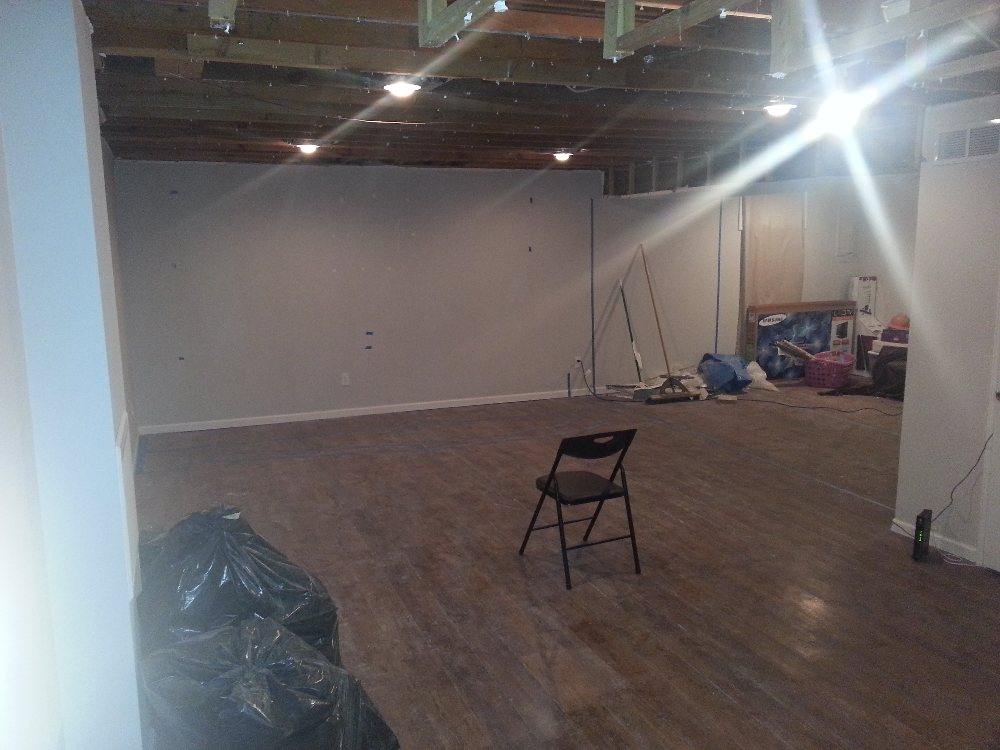
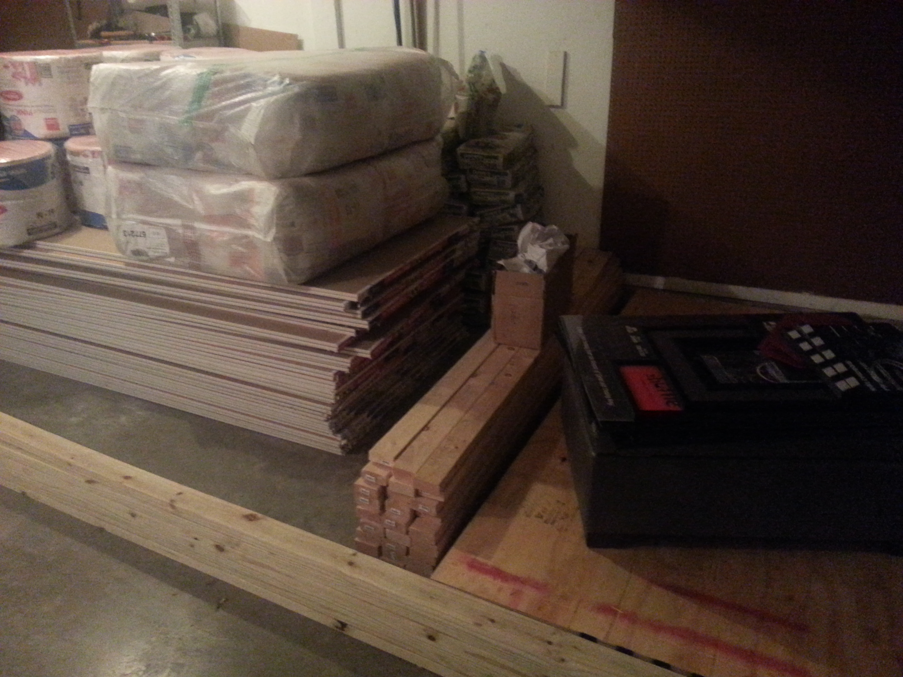
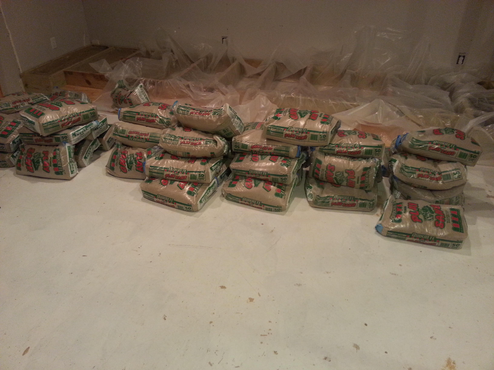
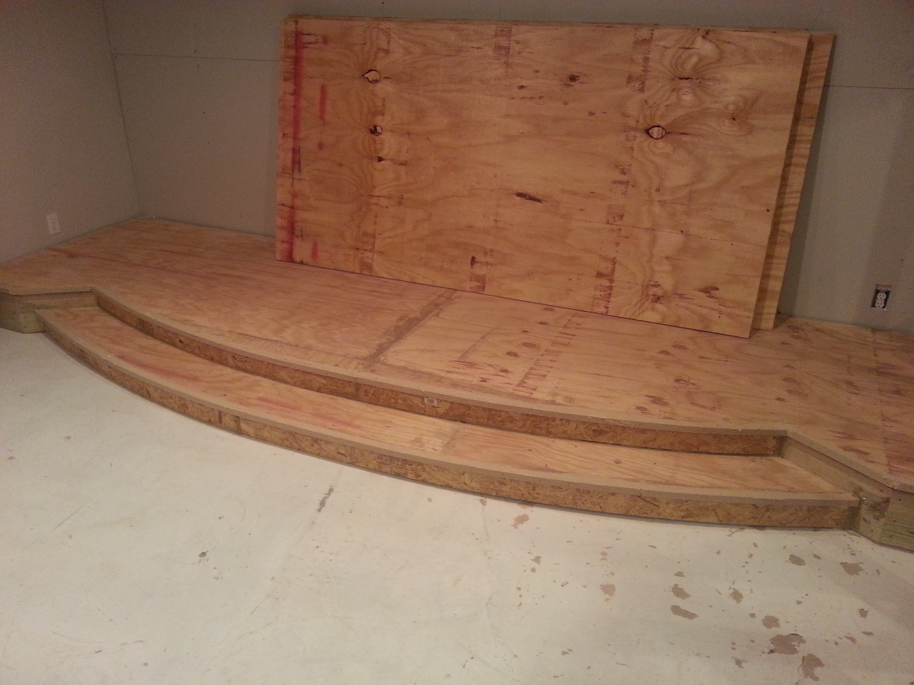
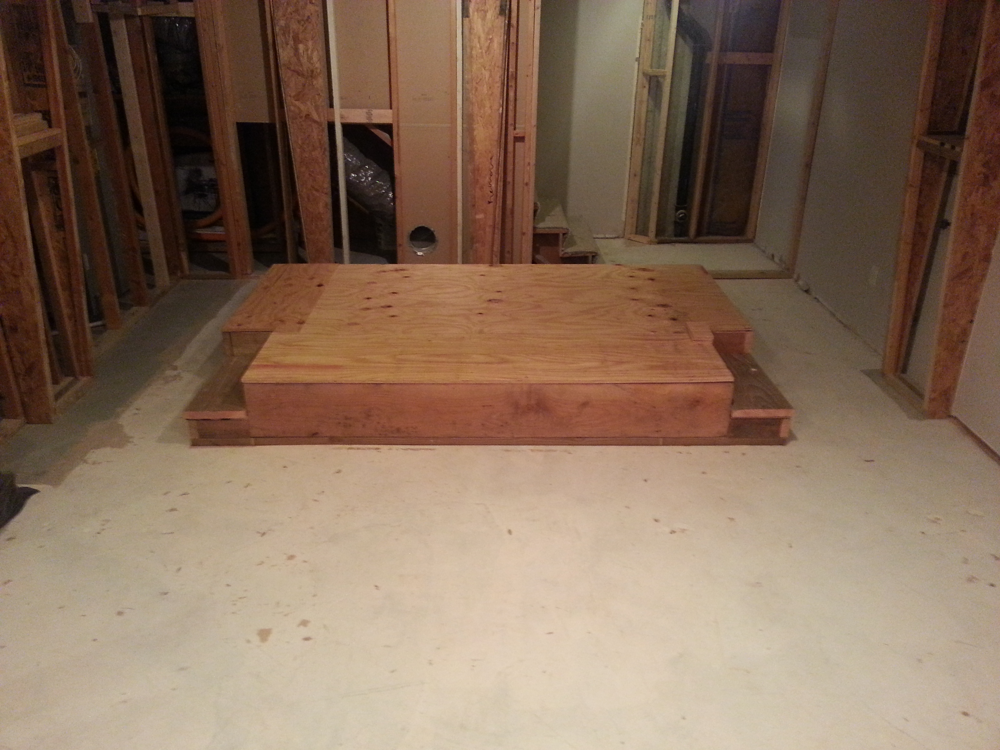
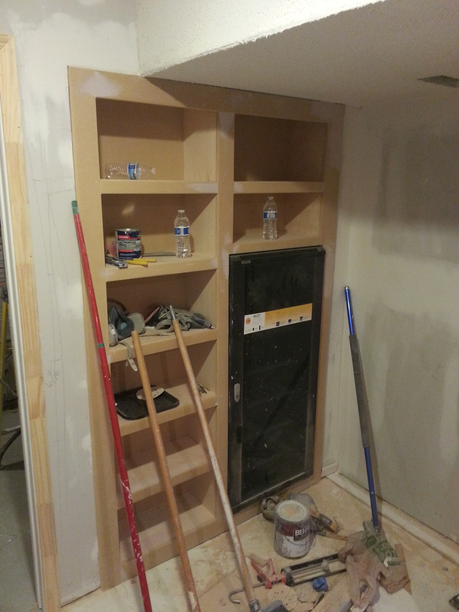
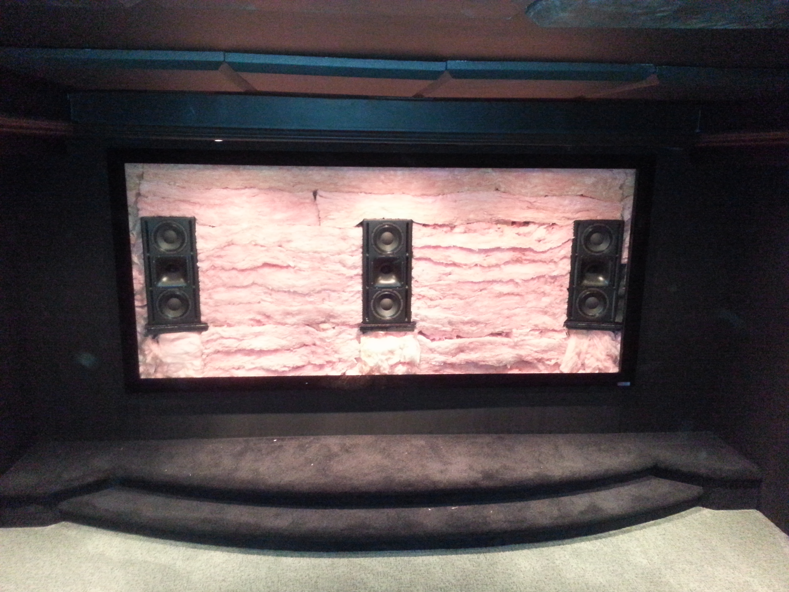
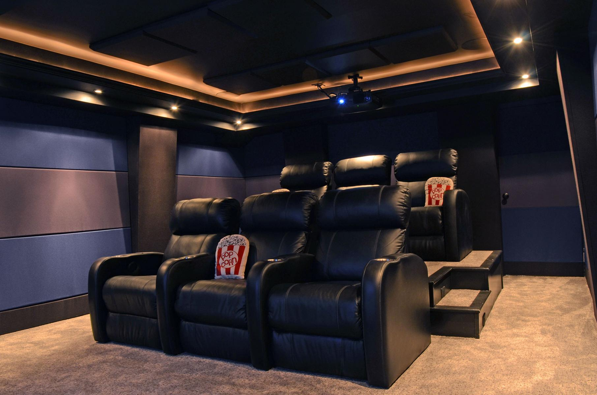
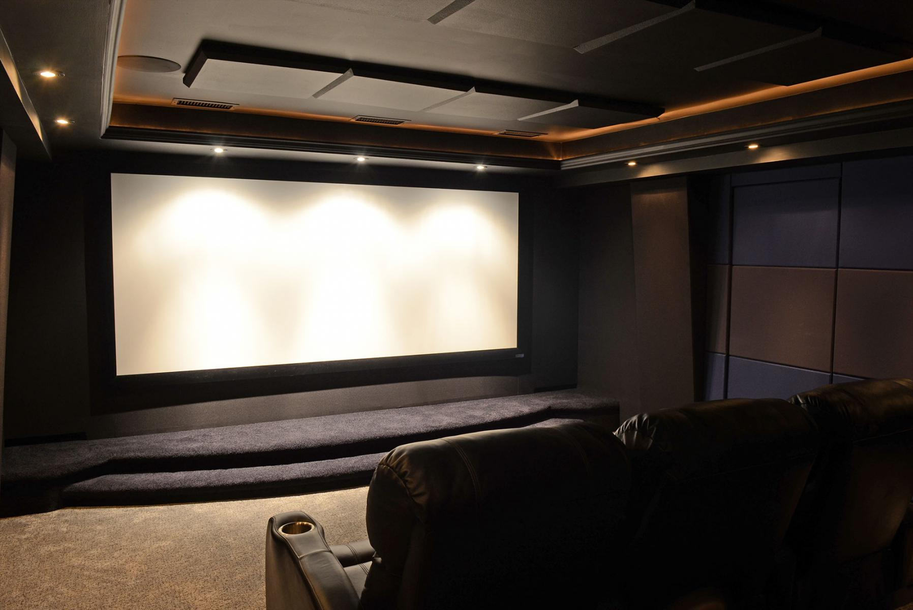

Film has long been a passion of mine, and over the years I have invested a good amount of money into having a quality display and sound system for watching movies. I had long dreamt of having a full size theater in my home if I ever won the lottery or something, but never expected the dream to become reality. That changed in 2014 when I met my wife.
The basement of our house was a large unused space and when I first laid eyes on it, my immediate thought was of the theater potential. Much to my surprise, my wife gave me the go ahead to do what I wanted with the space, and thus began my plans for an amazing space.
A theater with a projection system was much different from what I had experience with so I began to research. For months I read for hours every day trying to find out as much as I could. We spoke to all sorts of installers and looked at lots of equipment, but my research led me to believe I didn't need help except for the construction. My wife's cousin gave us a great deal, and we finally decided to move forward.
The Empty Space
The space we started with was 'L' shaped and needed a lot of work to become a theater. The ceiling had to be torn out to see what we were working with as far as the HVAC, joists, and wiring were concerned. The flooring also had to come up to make way for something better.
The Materials
Once all the plans for the theater were determined, I had to determine which materials would be necessary for the build , and we put in a huge order at Home Depot. Our garage was the staging area for all of the supplies.
Construction Begins
In November of 2014, after about 5 months of research and planning, principle construction began. On the first day of construction, framing for a wall to divide the space was completed paving the way for what was to come.

The Front Stage
After framing for the wall and soffits was complete, work on the front stage began. Once the basic frame was ready, I began the laborious process of filling the cavities with nearly 3,000 pounds of dry play sand. The sand acts as a dampener for any vibrations that may be caused by the subwoofers. The idea there is to prevent rattles spreading through the rest of the house.
Once filled with sand, the stage was covered with 2 layers of plywood and a lip was added for carpet to wrap around.
The Riser
Next up was the riser. This 15.5" high structure is to allow the second row of seating to have a clear line of sight to the screen. The riser is filled with insulation and has connections for HDMI, internet, and more, as well as lights on the steps.
The Media Shelf
One thing necessary for a theater is something to watch. My electronic components and all of my movies would be located in the next room, and a shelf was built to hold everything. This was custom built to fit my equipment rack.
Behind the Screen
Nearing the end of the build, after the painting was done and the carpet was installed, more work was required before the theater was ready for a screen. Speakers were installed behind the screen (to give the perception of dialogue coming from where we see the characters) and a wall of insulation was built to control sound reflections.
The Finished Product
Finally, after nearly 6 months of construction, the room was ready. The screen and projector were up, the seats in place, and movies ready to go. The room turned out just as I had imagined. A few upgrades have been made in the year since it was completed. Ceiling speakers were added to allow for the most advanced audio formats.
 